По информации Белгидромета, среднее число дней с туманом за год на территории Беларуси колеблется от 30 до 70.
Мы поехали в Новогрудок, чтобы посмотреть, каково жить в самом туманном городе Беларуси
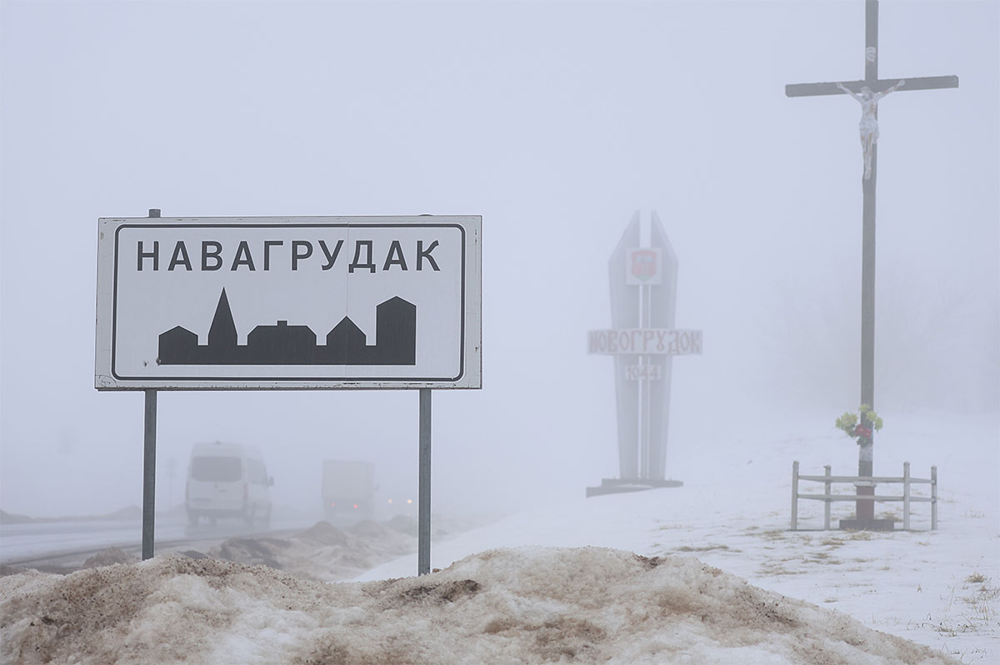
Начнем с фактов: в Лондоне, который имеет статус туманного Альбиона, 45 дней в году с дымкой, а в белорусском Новогрудке таких насчитали около 67. Абсолютный рекорд был в 1964-м – 140 дней, то есть чуть ли не полгода в тумане! По продолжительности такой погоды в стране Новогрудку тоже нет равных. Только представьте: в ноябре 1958 года туман длился почти 14 суток, 334 часа, то есть почти половину месяца!
Мы, конечно же, не могли оставить без внимания эту информацию и отправили туда нашего корреспондента Марию Крушевскую.
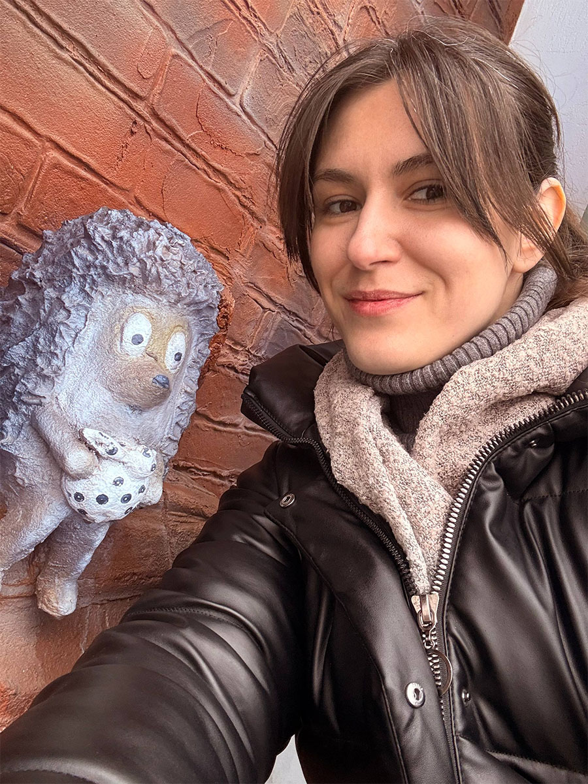
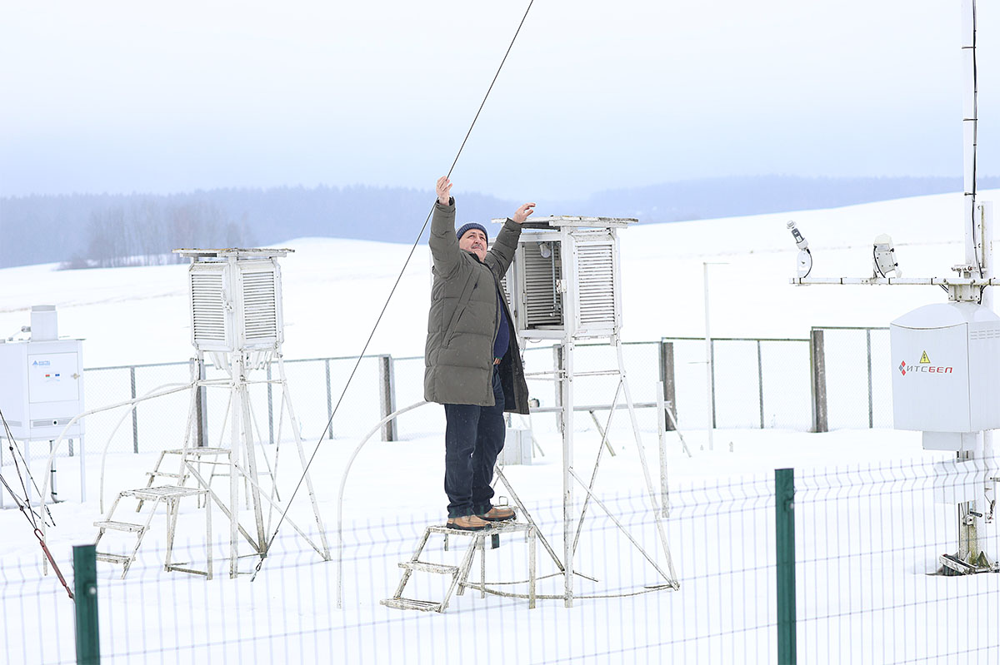
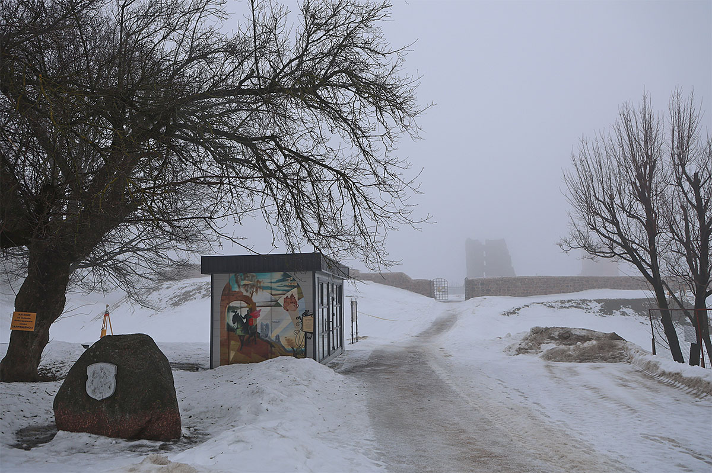
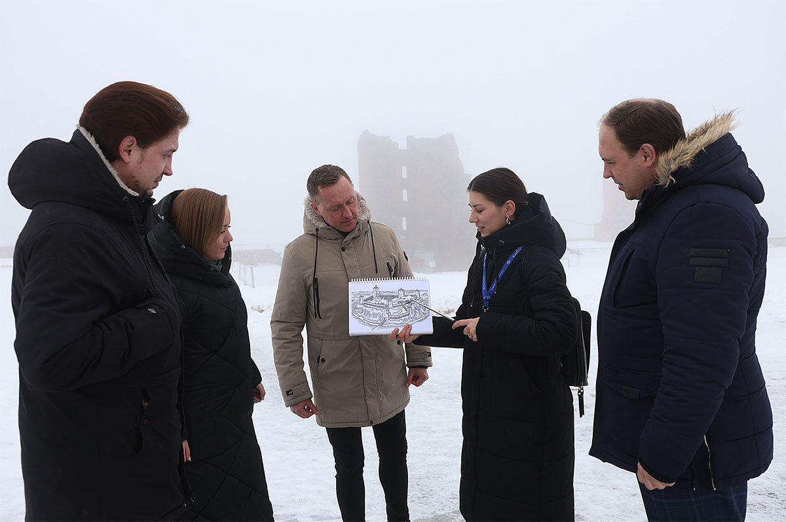
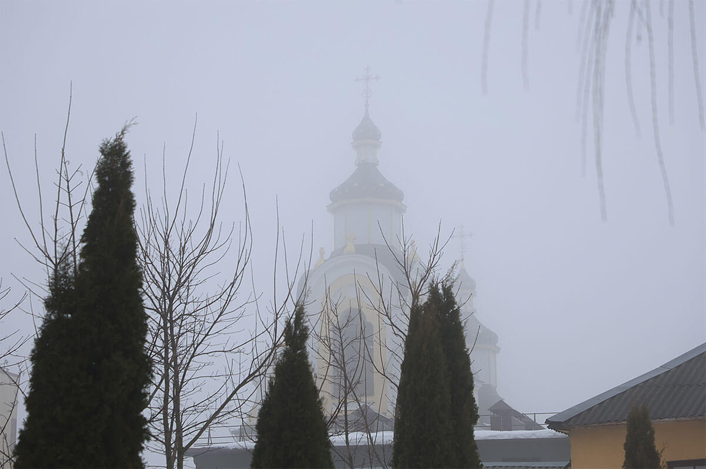
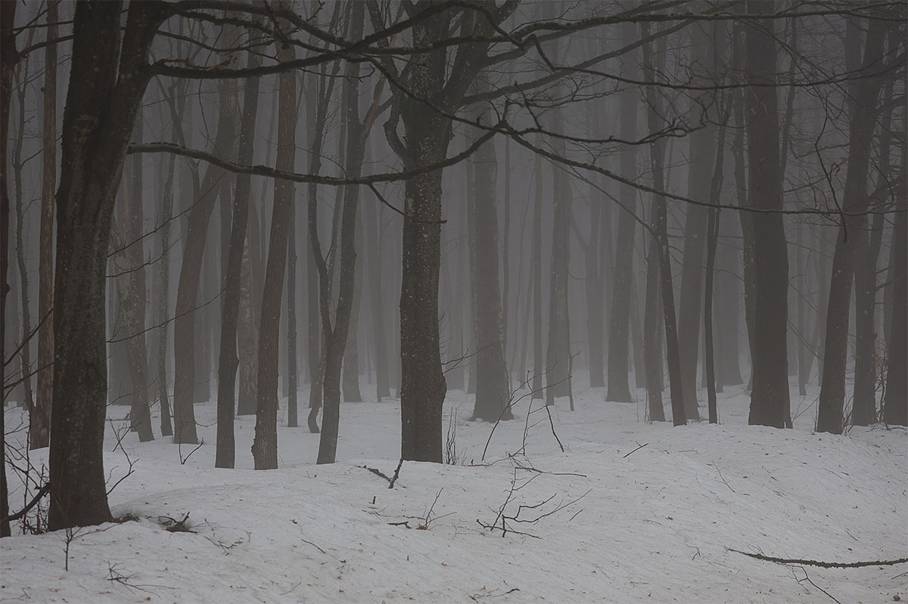
Уникальность города мы заметили, едва к нему подъехав: в Гродно утром было ясно и солнечно, в Новогрудке видимость лишь на 100 метров вперёд… В Белгидромете объяснили — Новогрудок находится на возвышенности и из-за преобладания западного переноса воздушных масс на территории нашей страны в городе складываются благоприятные условия для возникновения туманов.
Интересно, что туманность не единственный феномен Новогрудка, который можно здесь заметить в плане погоды, отмечает начальник метеостанции Елена Гоцко:
— Из-за того, что мы находимся на возвышенности в 270 метров над уровнем моря, грозовой фронт как будто бы «цепляется» за нас и остаётся, пока не выльются все осадки, при этом в соседних районах сухо и спокойно. Не зря говорят в народе, каждая третья тучка цепляется за Новогрудок. Либо, наоборот – везде непогода, а нас она обходит.
Живущий в Новогрудке более 40 лет Денис Перелайко отмечает, в прошлом году в один из дней видимость была лишь на полтора метра вперед:
— В гости часто приезжают друзья из Минска, Санкт-Петербурга и очень удивляются, как мы живем в вечном тумане. Особенно по утрам в полной тишине и дымке можно легко, говорят, потеряться. Но это лишь предположение: местные жители знают город как свои пять пальцев, да и привыкли к условиям плохой видимости.
— Видны ведь только верхушки зданий или какие-то окрестности, поэтому создается очень романтическая обстановка. Но больше всего молодежь обожает приходить на замковую гору! Я их понимаю, оттуда открывается просто волшебный вид: сверху замок, снизу – все как будто бы залито молоком, видны лишь отдельные фонари. Я считаю, что таких туманов, как у нас вообще нигде не встретишь! И да, он придает нашему городу уникальный шарм.
Самое большое количество туманных дней в Новогрудке приходится на осень и зиму — от 14 до 17. Не мешает ли это гостям города рассматривать достопримечательности? Директор туристического информационного центра Новогрудка Ульяна Войтович говорит, что люди реагируют по-разному. Некоторые расстраиваются, ведь населённый пункт — самый высокогорный в стране, многие едут сюда, чтобы сфотографировать красивые пейзажи. А другие, наоборот, специально охотятся за туманом.
— Такая погода очень подходит Новогрудку, — отмечает Ульяна Войтович. — Дымка как будто скрывает все современные постройки, оставляя в поле зрения лишь башни замка. В среднем за туристический сезон его посещают 4–6 тысяч человек.
По-настоящему сказочная атмосфера царит и в городе, чем пользуются местные экскурсоводы. Например, программа «Ночная мистерия» включает в себя прослушивание органа в костёле Святого Архангела Михаила и ночную прогулку, когда на улицах нет ни души и всё укутано туманом.
— Многие путешественники устали от традиционных экскурсий, хотят новых эмоций, их мы и предлагаем. Что интересно, туман у нас бывает разный — густой, как молоко, или лёгкая дымка, а порой он становится словно живым, клубы будто перемещаются в пространстве… Завершаем экскурсии по традиции у ежика в тумане. Новогрудский винзавод разместил у фирменного магазина скульптуру из советского мультфильма. Несмотря на то что это новодел, туристов от ежика не оторвать. Никто не уходит без селфи, — рассказывает собеседница.
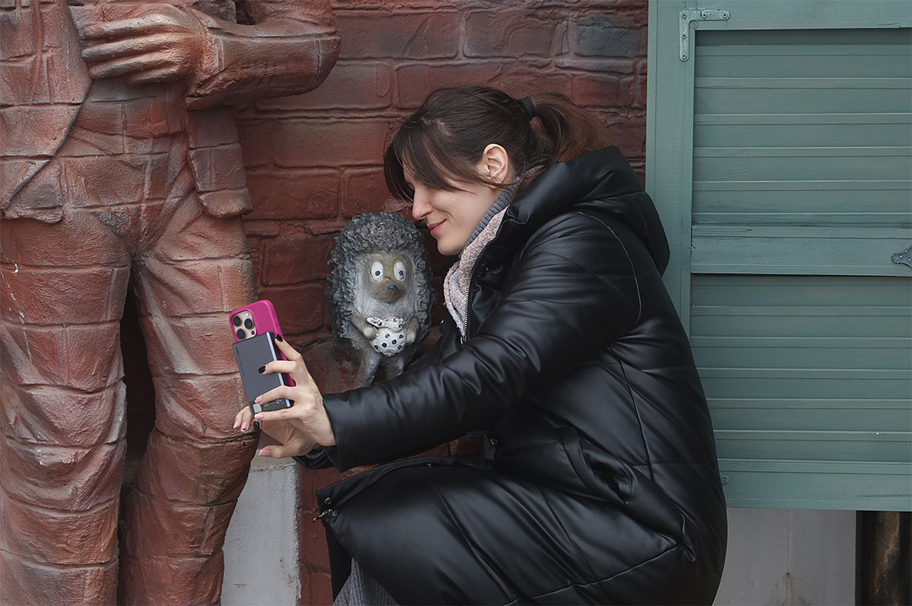
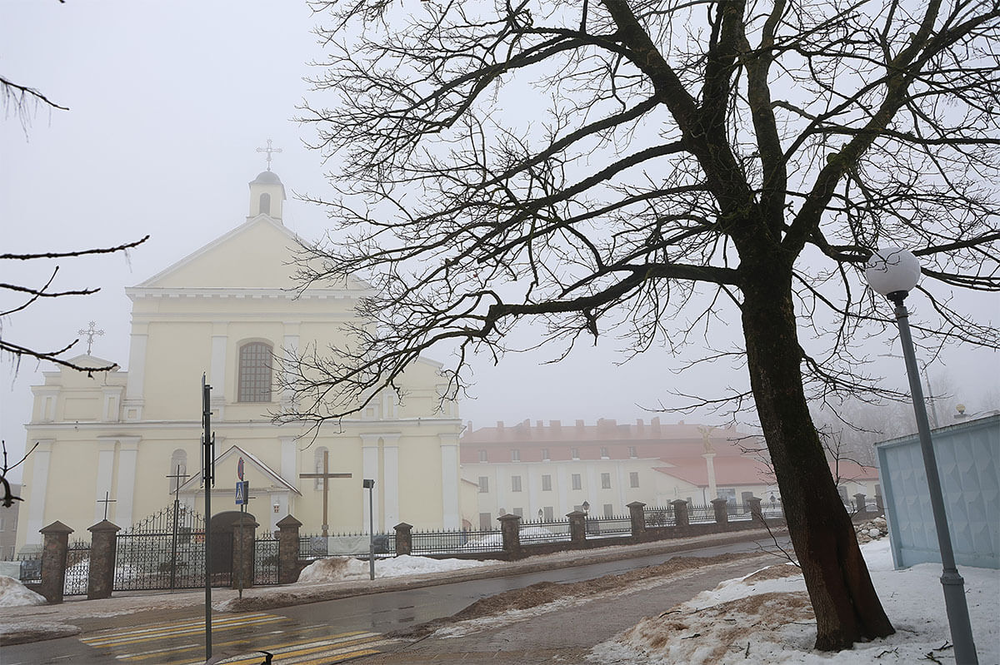
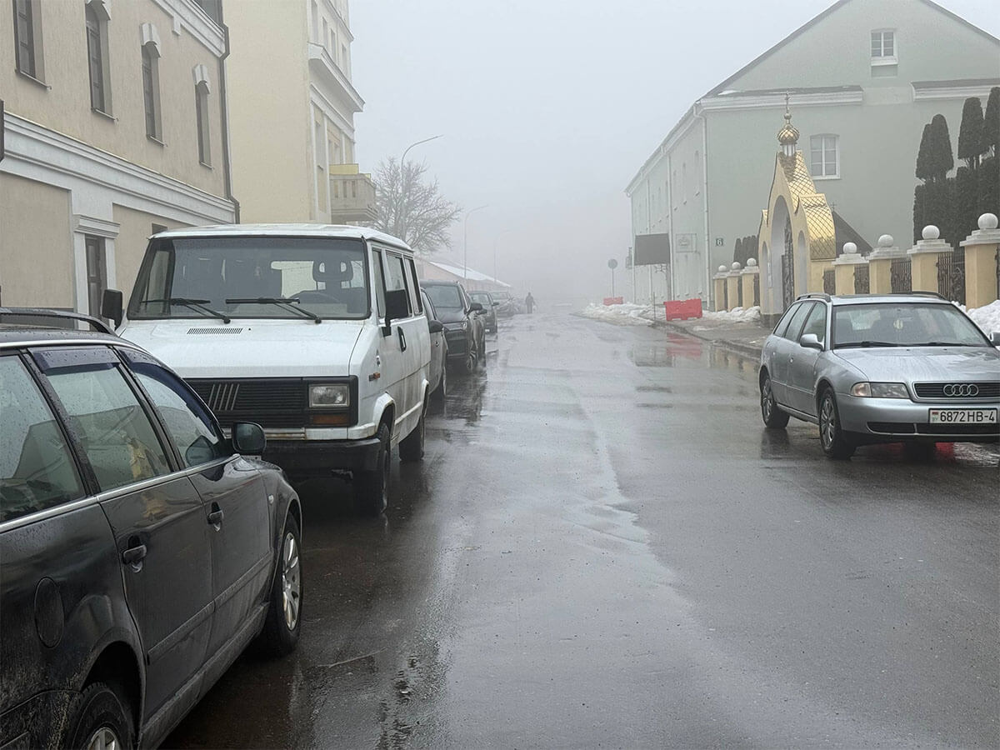
По информации Белгидромета, среднее число дней с туманом за год на территории Беларуси колеблется от 30 до 70.
В среднем за год в Новогрудке наблюдается 67 дней с туманом — почти в два раза больше, чем во многих других регионах страны.
Самое большое количество туманных дней приходится на осенне–зимний период: от 14 до 17 дней в месяц. В 1964 году был зафиксирован абсолютный рекорд — 140 туманных дней за год.
В ноябре 1958 года туман в Новогрудке длился почти 14 суток — 334 часа, то есть почти половину месяца. В январе 1960 года он держался более 10 суток (244 часа), а в феврале 1961-го — более 11 суток (271 час).
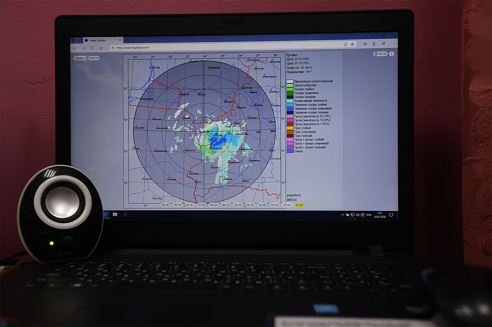
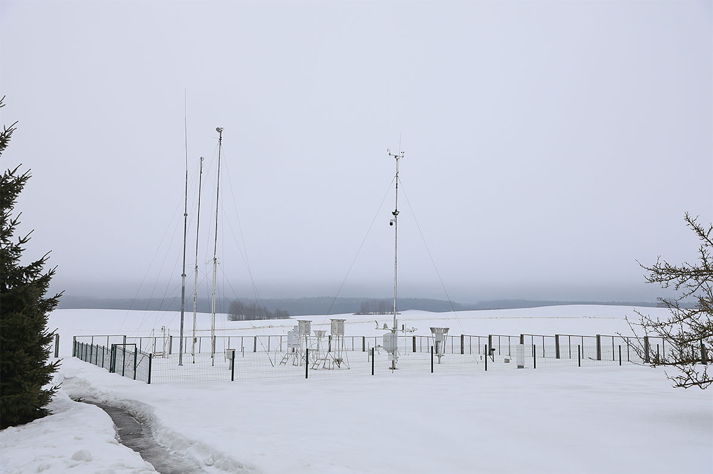
Попробуйте найти журналистов СБ в Новогрудке.